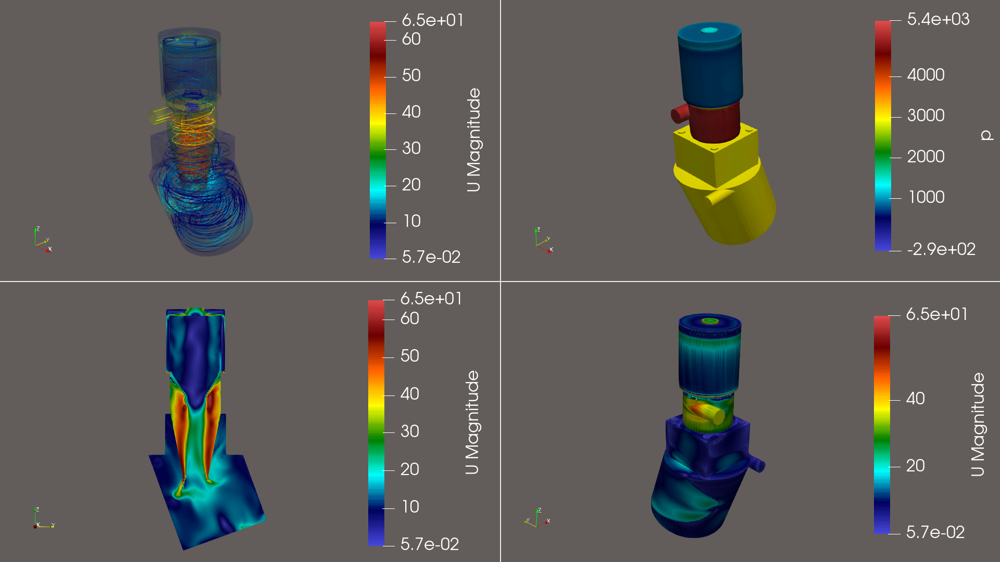

Engineering Projects and Technical Results
Selected engineering analyses, optimization studies and industrial simulations focused on real-world operating conditions and measurable technical improvements.
Selected Projects

Cyclone Separator Flow Optimization
Airflow analysis, turbulence reduction and efficiency improvement of industrial separation systems.
Problem
Excessive turbulence inside the separator caused high pressure losses, unstable particle trajectories and local wall erosion, reducing long-term operational reliability.
Solution
Advanced CFD simulations were used to analyze vortex structures, particle movement and internal flow stability. Optimization of inlet geometry significantly reduced unstable recirculation zones.
Result
−18% pressure loss and +12% separation efficiency verified through subsequent operational testing and technical evaluation.
Thermal Distribution Study
Evaluation of heat transfer, cooling efficiency and thermal stability in enclosed systems.
Problem
Uneven thermal distribution generated excessive thermal stress and premature material degradation in temperature-sensitive components.
Solution
Transient thermal simulations were performed to evaluate heat flux and identify critical hot spots. Cooling channels and airflow paths were redesigned for improved thermal balance.
Result
Thermal stability improved by 25% while critical localized overheating areas were completely eliminated.
Rotating Flow Simulation
Aerodynamic analysis around rotating components and optimization of flow behavior.
Problem
High aerodynamic drag around fast rotating mechanical components reduced overall transmission efficiency and increased power consumption.
Solution
MRF (Moving Reference Frame) simulations were used to model rotational effects and optimize surrounding geometry to reduce aerodynamic resistance.
Result
Aerodynamic drag reduced by 8% resulting in measurable reductions in operating energy demand.
Multiphase Particle Transport
Simulation of particle transport, dust accumulation and industrial separation behavior.
Problem
Dust accumulation in duct dead-zones created operational hazards, reduced efficiency and increased maintenance frequency.
Solution
DPM (Discrete Phase Model) simulations tracked particle trajectories and identified problematic flow regions. Auxiliary air guidance solutions were implemented.
Result
95% reduction of dust accumulation in critical areas, significantly lowering maintenance requirements and operational downtime.
Need a similar engineering analysis?
Every engineering project can be adapted to specific industrial requirements, operating conditions and optimization goals.
Request Analysis